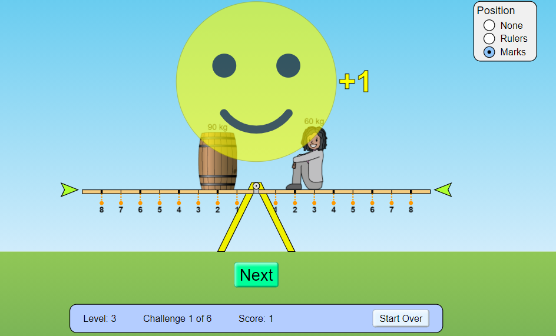

Description: This simulation from PhET allows learners to balance various objects on a teeter totter to understand how masses are balanced and gain a basic intuition for balancing forces. Several example lesson plans and resources are included under the "For Teachers" tab.

Quote: Play with objects on a teeter totter to learn about balance. Test what you've learned by trying the Balance Challenge game.